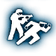

Skills are the core of Payday 2's building system. There are 90 skills in Payday 2 with 2 levels each, making a total of 180 unique skills. These are the most useful skills that appear in many strong builds.
Navigation
Mastermind
Uppers
Uppers provides 7 (or 10) extra First-Aid kits that can be used to prevent you from going down and restore your health to full. This can increase your uptime, but provides less "revives" than Combat Doctor does.
Combat Doctor
Combat Doctor provides an extra doctor bag, and doubles the amount of charges your doctor bags have from 2 to 4. This provides you with 24 downs instead of the standard 9 you would have without this skill, and
drastically increases survivability.
Inspire
Inspire allows you to revive someone instantly from up to 9 meters. This is a massive improvement from the 6-second standard revival that leaves you vulnerable. It also doubles your revive speed, and gives you the ability
to shout at your teammates to increase their movement and reload speeds. The only disadvantage to this skill is the skill point cost, being the capstone skill of medic and costing 12 points to ace. Also, heisters who
are freshly revived do not have much health and may be vulnerable after being revived.
Joker
Joker allows you to "convert" a cop to your team, turning them against the other cops. This can draw fire away from you, increasing your survivability. The only problem is that Jokers aren't very survivable
on their own, but this can be improved drastically with other skills

Partners in Crime
Partners in Crime drastically improves the survivability of converted cops, giving them 99% damage reduction when aced and giving some player buffs as well. This skill singlehandedly turns Joker from a bad
but fun skill into a near necessity for high-difficulty play, with converted cops acting as bullet sponges while you and your teammates complete objectives.
Hostage Taker
Hostage taker provides 1.5% (or 4.5% if aced) health regeneration every 5 seconds if your team has a hostage or if you have a converted cop from the "Joker" skill. Health regeneration is an essential part of any Payday 2 build,
and Hostage taker can provide health regeneration to a build that otherwise lacks it. However, Hostage Taker is an expensive skill, costing 12 points for the ace, meaning that it should only be used as a last resort
when a build can't find a way to regenerate health without it.
Ammo Efficiency
Ammo efficiency refunds 1 ammo for every 3 headshots you get with a single-shot gun (other than shotguns). This can be useful for guns that have high damage but poor ammo pickup,
especially since aceing this skill lowers the headshot requirement to 2.